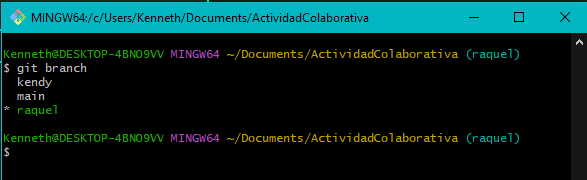
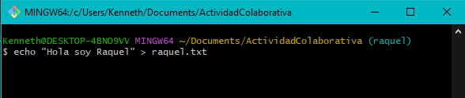
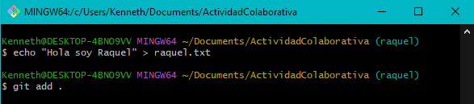
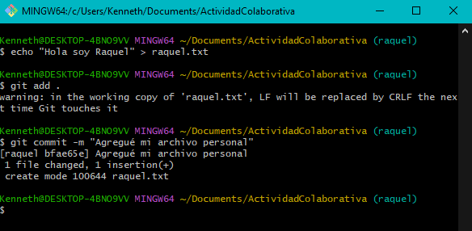
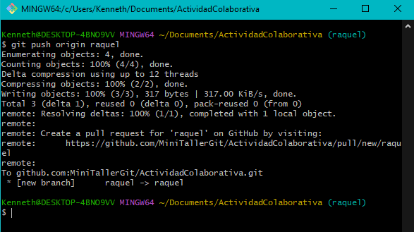
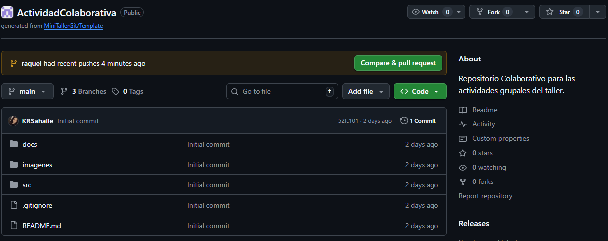

Para trabajar sin afectar la rama main, crea tu propia rama:
git checkout -b tu-nombreEjemplo: git checkout -b raquel
git branchEl asterisco (*) debe aparecer junto a tu rama.
echo "Hola soy Raquel" > raquel.txtCrea un archivo con un mensaje dentro.
git add .El punto (.) añade todos los archivos modificados.
git commit -m "Agregué mi archivo personal"El mensaje describe los cambios realizados.
Ahora debemos subir nuestra rama y asociarla al remoto:
git push origin tu-nombreEjemplo: git push origin kendy
De esta manera la rama ya está creada y asociada al repositorio colaborativo:
Las ramas asociadas al repositorio colaborativo se pueden visualizar en la página del repositorio en GitHub:
Con esto tu rama estará subida a GitHub y lista para colaborar. En el siguiente paso aprenderemos a hacer un Pull Request.
mainSi necesitas regresar a la rama principal ejecuta:
git checkout main
git pull origin maingit checkout -b tu-nombre → Crear tu rama personal.git branch → Verificar en qué rama estás.echo "Hola soy ..." > archivo.txt → Crear un archivo nuevo.git add . → Añadir cambios al área de preparación.git commit -m "mensaje" → Guardar los cambios localmente.git push --set-upstream origin tu-nombre → Subir la rama al repositorio remoto y asociarla.